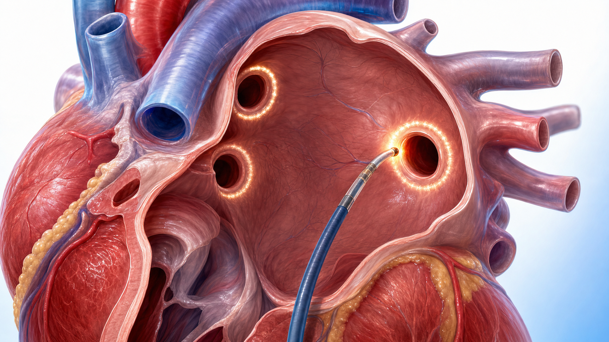

흔한 부정맥
대표 부정맥
유병률 ↑
대표적 노년기 부정맥
위험 ↑
뇌혈관을 막을 수 있음

두근거림(심계항진)
가슴이 두근거리거나 심장이 덜컥·쿵쿵 뛰는 느낌. 가장 흔히 느끼는 증상입니다.
맥이 불규칙
손목 맥을 짚으면 간격이 들쭉날쭉. 빠르게 뛰다가 건너뛰는 느낌이 들 수 있습니다.
숨참·호흡곤란
계단을 오르거나 가벼운 활동에도 평소보다 숨이 차고 가슴이 답답할 수 있습니다.
피로·기운 없음
쉽게 지치고 운동 능력이 떨어집니다. 심장이 효율적으로 일하지 못하기 때문입니다.
어지럼·아찔함
머리가 핑 돌거나 눈앞이 캄캄. 어지럼이 심하거나 실신하면 즉시 진료가 필요합니다.

증상이 전혀 없기도
아무 느낌이 없어도 뇌졸중 위험은 그대로입니다. 건강검진·심전도에서 우연히 발견되기도 합니다.
뇌졸중 예방
= 항응고 치료
CHA₂DS₂-VASc 점수로 위험을 따져 항응고제를 시작합니다. DOAC(NOAC)가 1차이며, 아스피린은 예방 효과가 부족합니다.
율동 / 심박수
조절
맥이 너무 빠르지 않게 늦추거나(심박수), 정상 리듬으로 되돌립니다(율동). 약물이 기본이고, 필요 시 전극도자절제술을 합니다.

위험인자·
동반질환 관리
고혈압·비만·수면무호흡·당뇨를 관리하고, 음주를 절제하며 규칙적으로 운동합니다. 재발을 줄이는 토대입니다.
심박수 조절
맥이 너무 빠르지 않게 늦춥니다. 베타차단제 등으로 두근거림·숨참을 줄이는, 가장 흔한 첫 단계입니다.

율동 조절(약물)
정상 리듬으로 되돌리고 유지하는 약을 씁니다. 증상이 심하거나 조기 치료가 필요할 때 고려합니다.
전극도자절제술
약으로 조절이 안 되거나 재발이 잦으면, 부정맥을 일으키는 부위를 차단하는 시술을 합니다.

방법은 개인 맞춤
나이·증상·심장 상태에 따라 율동 조절과 심박수 조절 중 더 알맞은 쪽을 함께 정합니다.

전극도자절제술 폐정맥 격리고혈압 관리
가장 흔한 동반 위험인자. 혈압을 잘 조절하면 심방세동과 뇌졸중 위험이 함께 줄어듭니다.

체중·비만
과체중은 심방에 부담을 줍니다. 체중을 줄이면 증상과 재발이 뚜렷이 좋아집니다.
수면무호흡
코골이가 심하고 자다 숨이 멎으면 평가가 필요합니다. 치료하면 재발을 크게 줄입니다.
음주 절제
술은 심방세동의 흔한 방아쇠입니다. 절주하면 발작 횟수가 의미 있게 줄어듭니다.
당뇨 관리
혈당 조절은 혈관 건강과 직결됩니다. 당뇨를 함께 관리해 합병증 위험을 낮춥니다.

규칙적 운동
꾸준한 중강도 운동은 심장 건강을 돕습니다. 운동 강도는 의료진과 상의해 정합니다.

뇌졸중 신호(FAST)
갑자기 한쪽 팔다리 마비, 말이 어눌, 얼굴 한쪽 비대칭. 하나라도 보이면 즉시 119.

심한 흉통·호흡곤란
가슴을 쥐어짜는 통증, 식은땀, 숨이 몹시 차면 급성 심장 문제일 수 있습니다 — 즉시 응급실.
실신·심한 어지럼
정신을 잃거나 쓰러질 듯한 어지럼. 맥이 매우 빠르거나 느릴 때 동반되면 응급 평가가 필요합니다.
맥이 매우 빠름 + 증상
심장이 주체 못 할 만큼 빠르게 뛰면서 어지럽거나 가슴이 답답하면 바로 진료를 받으세요.